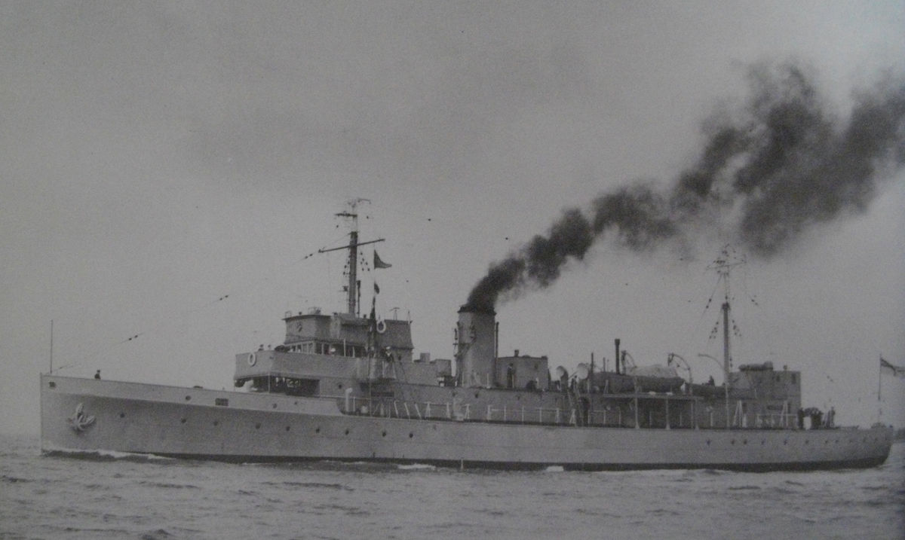
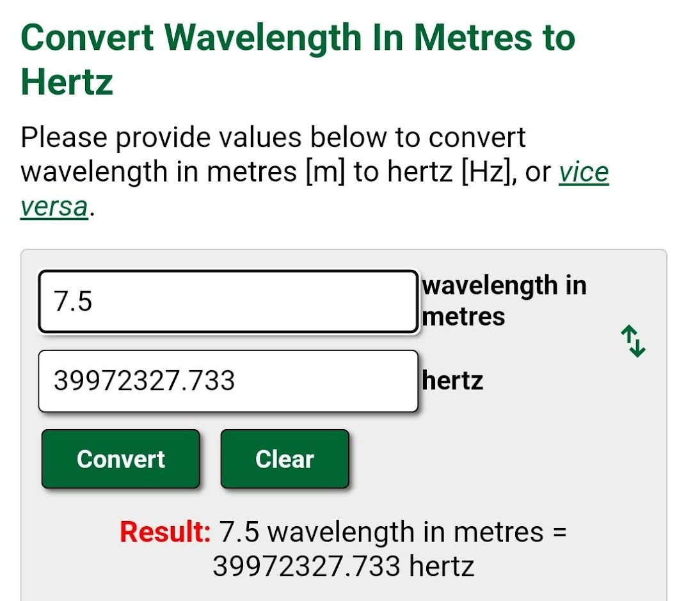
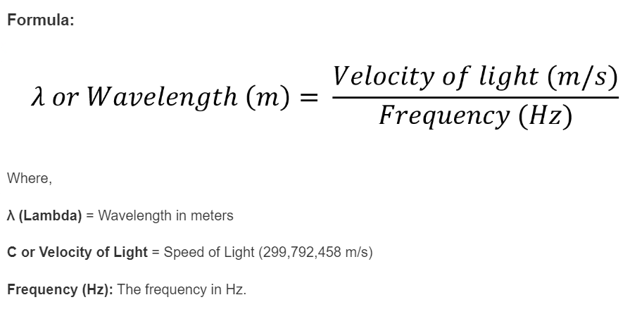
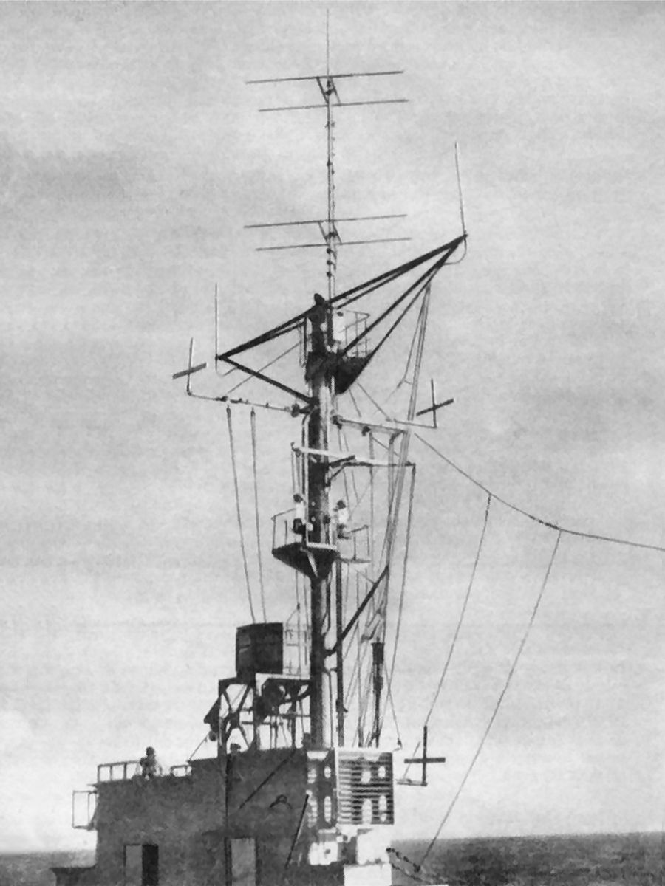
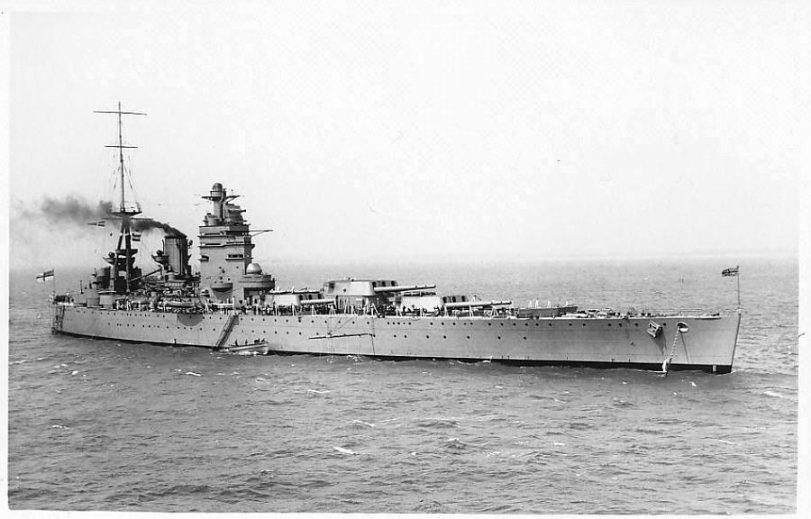
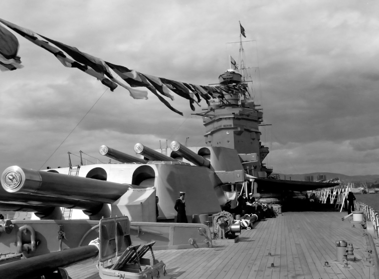
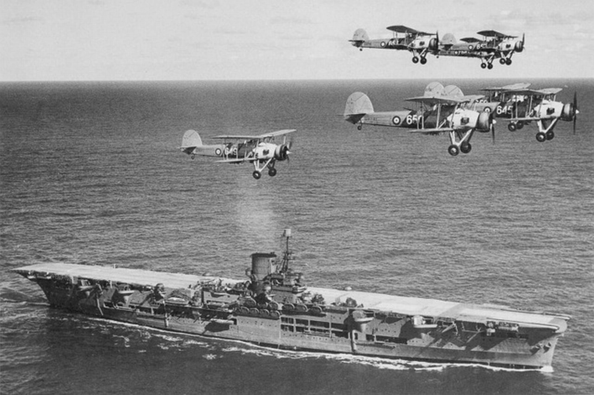

레이더 개발 이야기 (6) - 왜 기함에는 안 달지?
게시: 2022-10-20T06:30:21+09:00
<어쨰 점점 길어진다?> 1935년, 로열 에어포스의 레이더 개발 소식에 자극을 받아 시작한 주제에 '멍청한 공군놈들 ㅋㅋㅋ'이라며 공군 레이더의 모든 문제점을 해결하겠다며 호기롭게 시작한 로열 네이비는 곧 문제에 봉착. 일단 브리튼 섬 전체를 루프트바페로부터 지켜야 하는 공군과, 우리 배만 지키면 되는 해군의 압박감이 같을 리가 없었음. 레이더 개발에 정말 전폭적인 지원을 해주는 공군에 비해 로열 네이비 수뇌부의 레이더 개발 지원은 상대적으로 빈약. 해군 연구팀의 연구원은 정말 1명 뿐이었는데, 이들은 포츠머스에 있는 해군 기지 HM Barracks의 해병대 막사 옆 오두막 같은 것을 연구실로 받음. 곧 1명을 더 받기는 했으나, 2명이서 할 수 있는 것은 많지 않았음. 이 두 명의 팀은 근 10개월만에 오두막 연구소 안에서 뚝딱거리며 레이더 초기형을 만들었는데 이들은 오두막 옆에 군함 마스트 높이의 타워를 2개 짓고 하나에는 송신 안테나를, 다른 하나에는 수신 안테나를 설치. 이것이 로열 네이비 최초의 레이더인 Type 79 Radar. 왜 79식이냐 하면 이들이 소속된 Royal Navy Signal School(RNSS)에서 만든 79번째 장비였기 때문. 이들은 이렇게 만든 레이더를 낡은 소해정을 퇴역시키기 아까워 훈련선으로 쓰고 있던 HM Saltburn이라는 구닥다리 석탄 보일러 선박에 설치. 이때만 해도 이 Type 79 레이더는 비행기까지의 거리만 측정 가능했고 방향은 아예 감지를 못함. 더욱 나빴던 것은 선박은 아예 탐지를 못함. 수면에 가까울 수록 반사파 잡음 때문에 탐지가 어려웠던 것.

(HMS Saltburn. 초기 레이더의 송수신 안테나는 저 두 마스트 사이에 매단 와이어에 일정 간격을 두고 매달았다고. 그러나 이 사진은 당시 레이더 개발의 기밀 유지를 위해 해당 안테나 사진은 지운 것이라고 함.)
처음에는 공군의 어리석음을 비웃으며 자신들은 미터가 아닌 센티미터 길이의 단파를 쓰겠다고 시작했으나, 정작 해군에도 당장은 그런 고품질 진공관은 없었으므로 일단은 4m짜리 파장(주파수로는 75MHz)으로 시작. 하지만 곧 이것도 어렵다는 것을 깨닫고 40MHz로 주파수를 낮춤. 이건 7.5m짜리 파장에 해당. 이 정도면 전파 일부는 전리층에 반사되어 수평선 너머 베를린까지도 날아갈 위험이 있었으나 RNSS에서 더 나은 진공관을 만들 때까지는 방법이 없었음. 이건 나중에 해군 수뇌부에게 크게 안 좋은 인식을 심어줌.
 
(전파는 사실상 빛의 속도로 움직이고 빛의 속도는 일정하니 파장의 길이나 주파수 둘 중 하나만 알면 나머지는 자동적으로 결정됨.)
로열 네이비는 공군에 비해 확실히 개선을 만들기는 함. 그냥 정해진 방향, 즉 자기에게 할당된 바다 쪽만 쳐다보면 되었던 공군 레이더와는 달리 군함의 레이더는 사방을 다 돌아보아야 했고, 무엇보다 목표물과의 방위각 측정을 하기 위해 이들은 전파 방위계(radiogoniometer)를 따로 만들어 회전시키기보다는 지향성 안테나를 회전시키도록 고안. 그러나 무엇보다 Type 79는 여전히 수상함 탐지를 아예 못하고 대공 탐지용으로만 사용 가능했던 것이 큰 실망. ** 아래 사진이 나중에 좀더 개량되어 완성된 Type 79 레이더. 맨 위에 한쌍의 평행선을 그리는 안테나가 위 아래로 두개씩 달린 것이 레이더임. 어느 것이 transmitter이고 어느 것이 receiver인지는 모르겠음.

<왜 기함에는 레이더를 안 달죠?> 이렇게 어렵게 마련된 1937년 Type 79 초기형의 성능 테스트는 매우 실망스러운 결과만 냈음. 그러나 개발팀은 오히려 버럭 화를 내며 해군 수뇌부의 부실한 지원을 원망. 그런데 그게 사실 진짜 원인이었고 수뇌부도 그걸 인정. 그래서 더욱 많은 인원과 지원이 이루어짐. 당시 진공관 기술의 현실을 인정하고 파장 길이를 4m에서 7.5m로 늘인 것도 이때의 일. 이렇게 개량된 Type 79Y 레이더는 1938년 10월, 마침내 진짜 전함인 HMS Rodney (3만4천톤, 23노트, 사진1)와 순양함 HMS Sheffield (1만1천톤, 32노트, 사진2)에 탑재됨. 쉐필드에서의 테스트 결과, 1km 상공의 항공기를 48km 거리에서 탐지해냈고, 3.3km 고도의 항공기는 85km 거리에서 탐지. 거기에 새로 개발된 진공관을 쓴 결과 출력을 기존 20kW에서 70kW까지 늘릴 수 있었음. 그 결과 1939년 5월에는 3.3km 고도의 항공기를 112km 거리에서 탐지하는데 성공.

이 성공에 고무된 로열 네이비는 Type 79Y 레이더를 39척의 전함 및 순양전함, 그리고 순양함들에게 설치하기로 결정. 그러나 기함으로 지정된 전함들에는 설치하지 않기로 결정. 공식적인 이유는 기함은 그 역할상 통신이 무척 중요한데 혹시 레이더가 통신에 교란을 줄까 염려된다는 것. 그러나 이건 당연히 개솔휘. 실제 이유는 당시 로열 네이비 제독님들이 자신의 깃발을 날려야 할 자리에 송수신 안테나가 자리잡는 것에 무척이나 불쾌감을 표시하셨기 때문이라고.

(전시에는 하지 않지만 의전상 갖춰야 하는 다양한 깃발들... 이 사진은 HMS Rodney가 WW2 발발전 노르웨이 오슬로를 방문했을 때 내건 'dress flags'. 저 맨 위의 깃발 대신 흉칙한 안테나가 올라간다니! )
거기에 덧붙여 항공모함에도 레이더 설치가 안됨. 거기에 대해서는 공식 이유도 따로 발표되지 않았는데, 아마도 당시 몇 척 없던 항모들이 워낙 여기저기 불려다니느라 정비창에 들어올 시간을 마련하기가 어려웠을 것이라는 추정이 있을 뿐. 덕분에 1940년 4월, 독일의 노르웨이 침공을 막기 위해 파견되었던 항모 HMS Ark Royal (2만8천톤, 30노트, 아래 사진) 에게는 레이더가 없어서 독일 공군기의 습격을 미리 탐지할 수가 없었음. 대신 처음으로 레이더를 장착했던 HMS Sheffield가 아크 로열을 호위하고 있었기 때문에 쉐필드가 적기를 탐지하면 그 위치를 점등 신호로 아크 로열에게 알려주고, 아크 로열이 다시 무전기로 전투기들을 지휘하는 형식으로 유도가 되었음.

그러나 이 79Y 레이더에는 애초에 우려했던 근원적 문제가 있었음. 1939년 3월, 지브랄타 인근에서 최초의 레이더 탑재함들인 로드니와 쉐필드가 훈련을 했는데, 로드니는 수평선 너머 까마득한 거리인 160km 떨어진 쉐필드의 방위각을 불과 2도의 오차 내에서 성공적으로 탐지함. 이건 대성공이 아니라 대재앙이었음. 로드니는 레이더를 끈 상태였고, 쉐필드가 켠 상태였는데 그렇게 된 것임. 즉, 79Y 레이더는 7.5m 장파를 쓰다보니 일부 전파는 전리층에 반사되어 수평선 너머까지 멀리 퍼졌기 때문에, 오히려 레이더를 켠 쉐필드가 훨씬 쉽게 탐지되었던 것. 이 문제는 레이더의 효용성에 대해 로열 네이비 수뇌부에 안 좋은 인상을 심어줌.
그러나 레이더의 효용성은 곧 증명이 됨. 불과 몇 개월 뒤에 WW2가 터짐.